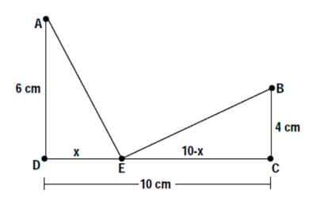

MATH 1830 Notes
Mary Monroe-Ellis
Susan Mosteller
Unit 3 Applications of Derivatives
3.1 Analyzing and Interpreting Graphs
Introduction
Discuss this graph with your group. Be prepared to share your observations with the class.

Notes
Curve Sketching
- ANALYZE $f(x)$
- Identify the Domain of $f(x)$: Commonly, $f(x)$is undefined for at any x value where:
- A denominator equals zero
- There is an even root of a negative number
- There is a log of a negative number or log of zero
- Identify x-intercepts and y-intercept of $f(x)$
- x-intercepts: Set $y = 0$ and solve for x
- y-intercepts: Set $x = 0$ and solve for y
- Identify Vertical Asymptotes and Holes of $f(x)$
- $f\left( x \right) = \frac{n}{0}\,\,n \ne 0$ vertical asymptote at x
- $f\left( x \right) = \frac{0}{0}$ hole at x
- Identify Horizontal Asymptote of $f(x)$
- To find the horizontal asymptote, calculate $\mathop {\lim }\limits_{x \to \infty } f\left( x \right)$
- Identify the Domain of $f(x)$: Commonly, $f(x)$is undefined for at any x value where:
- ANALYZE $f'(x)$
- Graph the critical numbers on a number line and determine the sign for each interval. Separate the number line into intervals with breaks at:
- Values of $x$ where$f'(x)=0$
- Values of x where $f'(x)$ is undefined
- Values of x where $f(x)$ is undefined
- Determine the intervals on which $f(x)$ is increasing /decreasing
- Test one point contained in the interval (do not use end points of the interval).
- $f'(x)<0$ means $f(x)$ is DECREASING on the interval
- $f'(x)>0$ means is $f(x)$ is INCREASING on the interval
- Identify local maxima and minima of f using first derivative test.
- Local Maximum: INCREASING → $f'(x)=0$ → DECREASING
- Local Minimum: DECREASING →$f'(x)=0$ → INCREASING
- Graph the critical numbers on a number line and determine the sign for each interval. Separate the number line into intervals with breaks at:
- ANALYZE f’’(x)
- Graph the critical numbers on a number line and determine the sign for each interval. Separate the number line into intervals with breaks at:
- Values of $x$ where $f"(x)=0$
- Values of$x$ where $f"(x)$ is undefined
- Values of $x$ where $f"(x)$ is undefined
- Determine the intervals on which f is concave up/concave down
- Test one point contained in the interval (do not use end points of the interval).
- $f"(x)<0$ means $f(x)$ is CONCAVE DOWN on the interval
- $f"(x)>0$ means $f(x)$ is CONCAVE UP on the interval
- Identify inflection points of $f(x)$. A Point of Inflections occurs if one of the following sequences occurs in the intervals:
- CONCAVE UP → $f"(x)=0$ → CONCAVE DOWN
- CONCAVE DOWN → $f"(x)=0$ → CONCAVE UP
- Graph the critical numbers on a number line and determine the sign for each interval. Separate the number line into intervals with breaks at:
- Graph the function $f(x)$
The annual first quarter change in revenue for Apple, Inc. is given in the table below.
| Year | % Revenue Growth |
|---|---|
| 1998 | -12.2 |
| 2000 | 27.1 |
| 2002 | 4.5 |
| 2004 | 29.4 |
| 2006 | 34.4 |
| 2008 | 42.7 |
| 2010 | 65.4 |
| 2012 | 58.9 |
| 2014 | 4.7 |
| 2016 | -12.8 |
The regression model for this data is: $$f(x)=-0.005x^4+0.113x^3-0.889x^2+7.946x-5.346$$
Analyze and interpret the characteristics of the function identified below. Graph the function clearly marking each characteristic. (Use graphing paper and colored pencils. Each graph should cover an entire piece of graph paper.)
- Analyze $f(x)$
-
Domain
[0,18]
This model shows 1st Quarter change in revenue from 1998 to 2016.
-
x-intercepts:
(from calculator): $\left(0.727,0\right)$ and $\left(17.428,0\right)$
In general this means the percent change in revenue was 0% when x=0.727 and x=17.428 years after 1998. Specifically for this data, the percent change in revenue was negative in 1998 and positive in 2000 and then was positive in 2014 and negative in 2016.
y-intercept:
$\left(0,-5.346\right)$
In 1998 percent change in revenue was approximately -5.346%, according to the model. The percent change in revenue was actually -12.2% in 1998.
-
Asymptotes:
No asymptotes. This is a polynomial function.
-
- Analyze $f'(x)$
$f'(x)=-0.02x^3+0.339x^2-1.778x+7.946$
Increasing and Decreasing
-
Values of x where $f'(x)=0$
$f'(x)=0$ at $x=12.358$
Values of x where $f'(x)$ is undefined
There are no values of x where $f'(x)$ is undefined.
Values of x where $f(x)$ is undefined
There are no values of x where $f(x)$ is undefined.

Sign graph of ${f}'(x)$ reading left to right: positive, ${f}'\left( 12.358 \right)=0$, negative
Increasing:$[0,12.358)$
The percent change in revenue was increasing from 1998 into 2010.
Decreasing:$(12.358,18]$
The percent change in revenue was decreasing in 2010 through 2016.
- Local maximum
$(12.358, 53.732)$
From the model, the maximum percent change in revenue occurs in 2010 (at x=12.358 years after 1998).
Local minimumThere are no local minima.
-
- Analyze $f"(x)$
$f''(x)=-0.06x^2+0.678x-1.78$
Concave Up and Concave Down
-
Values of x where $f"(x)=0$
$f''(x)=0$ at $x= 4.137$ and $7.163$
Values of x where $f"(x)$ is undefinedThere are no values of x where $f"(x)$ is undefined.
Values of x where $f(x)$ is undefinedThere are no values of x where $f(x)$ is undefined.

Sign graph of ${f}"(x)$ reading left to right: negative, ${f}'\left(4.137\right)=0,$ positive, ${f}'\left(7.163\right)=0,$ negative
Concave Up:$(4.137, 7.163)$
The percent change in revenue is increasing at an increasing rate from x=4.137 to x=7.163.
Concave down:$\lbrack0,\;4.137)\;\cup\;(7.163,\;18\rbrack$
The percent change in revenue is increasing at a decreasing rate from x=0 to x=4.137.
The percent change in revenue is increasing at a decreasing rate from x=7.163 to x=12.358 (the maximum) and decreasing at a decreasing rate from x=12.358 to x=18.
- Inflection points:
$(4.137, 18.848)$ and $(7.163, 34.325)$
According to the model, the percent change in revenue is changing most rapidly at x=4.137 and x=7.163.
-
- Graph $f(x)$

3.2 Analyzing and Interpreting Graphs Part 2
See Homework Assignment for 3.2
3.3 Curve Sketching
Analyze and interpret the characteristics of the function identified below. Graph the function clearly marking each characteristic. (Use graphing paper and colored pencils. Each graph should cover an entire piece of graph paper.)
-
$f(x)=\frac{3x+4}{2x-5}$
Domain:
Domain will not contain x values that cause the denominator to equal 0.
$ 2x-5\ne 0 $
$ x\ne \frac{5}{2}$
Domain: $\left( -\infty ,\frac{5}{2} \right)\cup \left( \frac{5}{2},\infty \right)$
x int(s):
$0=\frac{3x+4}{2x-5}$
$0=3x+4$
$ x=-\frac{4}{3}$
$\left( -\frac{4}{3},0 \right)$
y int:
$f\left( 0 \right)=\frac{3\left( 0 \right)+4}{2\left( 0 \right)-5}=-\frac{4}{5}$
$\left( 0,-\frac{4}{5} \right)$
Asymptotes:
Vertical:
$f\left( \frac{5}{2} \right)=\frac{1}{0}$
$x=\frac{5}{2}$
Horizontal:
$\underset{x\to \infty }{\mathop{\lim }}\,\frac{3x+4}{2x-5}=\underset{x\to \infty }{\mathop{\lim }}\,\frac{3x}{2x}=\underset{x\to \infty }{\mathop{\lim }}\,\frac{3}{2}=\frac{3}{2}$
$y=\frac{3}{2}$
Increasing and Decreasing
${f}'\left( x \right)=\frac{3\left( 2x-5 \right)-2\left( 3x+4 \right)}{{{\left( 2x-5 \right)}^{2}}}=\frac{6x-15-6x-8}{{{\left( 2x-5 \right)}^{2}}}=\frac{-23}{{{\left( 2x-5 \right)}^{2}}}$
Values of x where ${f}'\left( x \right)=0:$
There are no values of x where ${f}'\left( x \right)=0.$
Values of x where ${f}'\left( x \right)$ is undefined:
$2x-5=0$
$ x=\frac{5}{2}$
Values of x where $f\left( x \right)$ is undefined:
$2x-5=0$
$x=\frac{5}{2}$

Sign graph of ${f}'(x)$ reading left to right: negative, ${f}'\left( \frac{5}{2} \right)\text{= undefined}$, negative
Increasing:
There are no intervals where $f(x)$ is increasing.
Decreasing:
$\left( -\infty ,\frac{5}{2} \right)\cup \left( \frac{5}{2},\infty \right)$ The function is decreasing over the entire domain.
local max:
There are no local maxima.
local min:
There are no local minima.
Concave Up and Concave Down
${f}''\left( x \right)=-23\left( -2 \right){{\left( 2x-5 \right)}^{-3}}\left( 2 \right)=\frac{92}{{{\left( 2x-5 \right)}^{3}}}$
Values of x where ${f}''(x)=0$:
There are no values of x where ${f}''\left( x \right)=0$
Values of x where ${f}''\left( x \right)$ is undefined:
$ 2x-5=0$
$ x=\frac{5}{2}$
Values of x where $f\left( x \right)$is undefined:
$2x-5=0$
$x=\frac{5}{2}$

Sign chart for ${f}''\left( x \right)$: negative, ${f}''\left( \frac{5}{2} \right)=undefined$, positive
Concave up:
$\left( \frac{5}{2},\infty \right)$
Concave down:
$\left( -\infty ,\frac{5}{2} \right)$
Inflection Points:
There are no points of inflection because the function is undefined at $x=\frac{5}{2}.$

-
$f(x)={{e}^{x}}(5x-7)$
Domain:
$\left( -\infty ,\infty \right)$
x int(s):
$0={{e}^{x}}(5x-7)$
$5x-7=0$
$x=\frac{7}{5}$
${{e}^{x}}=0$
no solution
$\left( \frac{7}{5},0 \right)$
y int:
$f\left( 0 \right)={{e}^{0}}\left( 5\left( 0 \right)-7 \right)=-7$
$\left( 0,-7 \right)$
Asymptotes:
Vertical:
There are no vertical asymptotes. The function is continuous for all x.
Horizontal:
$\underset{x\to \infty }{\mathop{\lim }}\,\left( {{e}^{x}}(5x-7) \right)=\infty $
$\underset{x\to -\infty }{\mathop{\lim }}\,\left( {{e}^{x}}(5x-7) \right)=0$
$y=0$
Increasing and Decreasing
${f}'\left( x \right)={{e}^{x}}\left( 5x-7 \right)+5{{e}^{x}} $
$f’(x) ={{e}^{x}}\left( 5x-7+5 \right)={{e}^{x}}\left( 5x-2 \right)$
Values of x where ${f}'\left( x \right)=0:$
${{e}^{x}}\left( 5x-2 \right)=0$
$e^x \ne 0$
$x=\frac{2}{5}$
Values of x where ${f}'\left( x \right)\;$ is undefined:
There are no values of x where ${f}'\left( x \right)\;$ is undefined.
Values of x where $f\left( x \right)\;$ is undefined:
There are no values of x where $f\left( x \right)\;$ is undefined.

Sign graph of ${f}'(x)$ reading left to right: negative, ${f}'\left( \frac{2}{5} \right)=0$, positive
Increasing:
$\left( \frac{2}{5},\infty \right)$
Decreasing:
$\left( -\infty ,\frac{2}{5} \right)$
local max:
There are no local maxima.
local min:
$f\left( \frac{2}{5} \right)={{e}^{2/5}}\left( 5\left( \frac{2}{5} \right)-7 \right)\approx -7.46$
$\left( \frac{2}{5},-7.46 \right)$
Concave Up and Concave Down
${f}''\left( x \right)={{e}^{x}}\left( 5x-2 \right)+{{e}^{x}}\left( 5 \right)={{e}^{x}}\left( 5x-2+5 \right)={{e}^{x}}\left( 5x+3 \right)$
Values of x where ${f}''(x)=0:$
${{e}^{x}}\left( 5x+3 \right)=0$
$x=-\frac{3}{5}$
${{e}^{x}}\ne 0$
Values of x where ${f}''\left( x \right)\;$is undefined:
There are no values of x where ${f}''\left( x \right)\;$is undefined.
Values of x where $f\left( x \right)\;$is undefined:
There are no values of x where $f\left( x \right)\;$is undefined.

Sign chart for ${f}''\left( x \right)$: negative, ${f}''\left( -\frac{3}{5} \right)=0$, positive
Concave up:
$\left( -\frac{3}{5},\infty \right)$
Concave down:
$\left( -\infty ,-\frac{3}{5} \right)$
Inflection Points:
$f\left( -\frac{3}{5} \right)={{e}^{-3/5}}\left( 5\left( -\frac{3}{5} \right)-7 \right)\approx -5.488$
$\left( -\frac{3}{5},-5.488 \right)$

-
$f(x)=3{{x}^{2}}+5x-2$
Domain:
$\left( -\infty ,\infty \right)$
Polynomial functions are always continuous.
x int(s):
$ 0=3{{x}^{2}}+5x-2 $
$ 0=\left( 3x-1 \right)\left( x+2 \right) $
$x=\frac{1}{3}\,\,,\,\,x=-2$
$\left( \frac{1}{3},0 \right)\,\text{and}\,\left( -2,0 \right)$
y int:
$f\left( 0 \right)=0+0-2=-2$
$\left( 0,-2 \right)$
Asymptotes:
There are no asymptotes. The function is a polynomial.
Increasing and Decreasing
${f}'(x)=6x+5$
Values of x where ${f}'(x)=0:$
$0=6x+5$
$x=-\frac{5}{6}$
Values of x where ${f}''\left( x \right)\;$is undefined:
There are no values of x where ${f}''\left( x \right)\;$is undefined.
Values of x where $f\left( x \right)\;$is undefined:
There are no values of x where $f\left( x \right)\;$is undefined.

Sign graph of ${f}'(x)$ reading left to right: negative, ${f}'\left( -\frac{5}{6} \right)=0$ , positive
Increasing:
$\left( -\frac{5}{6},\infty \right)$
Decreasing:
$\left( -\infty ,-\frac{5}{6} \right)$
local max:
There are no local maxima.
local min:
$f\left( -\frac{5}{6} \right)=3{{\left( -\frac{5}{6} \right)}^{2}}+5\left( -\frac{5}{6} \right)-2\approx 4.08$
$\left( -\frac{5}{6},-4.08 \right)$
Concave Up and Concave Down
${f}''\left( x \right)=6$
Values of x where ${f}''(x)=0:$
There are no values of x where ${f}"\left( x \right)=0.$
Values of x where ${f}''\left( x \right)$ is undefined:
There are no values of x where ${f}''\left( x \right)$ is undefined.
Values of x where $f\left( x \right)$ is undefined:
There are no values of x where $f\left( x \right)$ is undefined.
Because there are no x values that meet the requirements for a partition, $f(x)$ will maintain the same concavity across the entire domain.

Sign chart for ${f}''\left( x \right)$: positive on domain
Concave up:
$\left( -\infty ,\infty \right)$
Concave down:
There are no intervals where $f(x)$is concave down.
Inflection Points:
There are no points of inflection.

-
$f(x)={{x}^{3}}+6{{x}^{2}}+9x$
Domain:
$\left( -\infty ,\infty \right)$
Polynomial functions are always continuous.
x int(s):
$ 0={{x}^{3}}+6{{x}^{2}}+9x$
$ 0=x\left( {{x}^{2}}+6x+9 \right) $
$ 0=x{{\left( x+3 \right)}^{2}} $
$x=0\,\,,\,\,x=-3$
$\left( 0,0 \right)\,\text{and}\,\left( -3,0 \right)$
y int:
$f\left( 0 \right)={{\left( 0 \right)}^{3}}+6{{\left( 0 \right)}^{2}}+9\left( 0 \right)=0$
$\left( 0,0 \right)$
Asymptotes:
There are no asymptotes. The function is a polynomial.
Increasing and Decreasing
${f}'(x)=3{{x}^{2}}+12x+9$
Values of x where ${f}'(x)=0:$
$0=3{{x}^{2}}+12x+9=3\left( x+3 \right)\left( x+1 \right)$
$x=-3$ and $x=-1$
Values of x where ${f}'\left( x \right)$ is undefined:
There are no values of x where ${f}'\left( x \right)$ is undefined.
Values of x where $f\left( x \right)$ is undefined:
There are no values of x where $f\left( x \right)$ is undefined.

Sign graph of ${f}'(x)$ reading left to right: positive, ${f}'\left( -3 \right)=0$, negative, ${f}'\left( -1 \right)=0$, positive
Increasing:
$\left( -\infty ,-3 \right)\cup \left( -1,\infty \right)$
Decreasing:
$\left( -3,-1 \right)$
local max:
$f\left( -3 \right)={{\left( -3 \right)}^{3}}+6{{\left( -3 \right)}^{2}}+9\left( -3 \right)=0$
$\left( -3,0 \right)$
local min:
$f\left( -1 \right)={{\left( -1 \right)}^{3}}+6{{\left( -1 \right)}^{2}}+9\left( -1 \right)=-4$
$\left( -1,-4 \right)$
Concave Up and Concave Down
${f}''(x)=6x+12$
Values of x where ${f}''(x)=0:$
$0=6x+12$
$x=-2$
Values of x where ${f}''\left( x \right)$ is undefined:
There are no values of x where ${f}''\left( x \right)$ is undefined.
Values of x where $f\left( x \right)$ is undefined:
There are no values of x where $f\left( x \right)$ is undefined.

Sign chart for ${f}''\left( x \right)$: negative, ${f}''\left( -2 \right)=0$, positive
Concave up:
$\left( -2,\infty \right)$
Concave down:
$\left( -\infty ,-2 \right)$
Inflection Points:
$f\left( -2 \right)={{\left( -2 \right)}^{3}}+6{{\left( -2 \right)}^{2}}+9\left( -2 \right)=-2$
$\left( -2,-2 \right)$

3.4 Introduction to Optimization
Introduction
-
Construct a 20 cm by 20 cm square on the white piece of paper.
-
Draw four congruent squares in each corner of your original square (see diagram below), the size of the four squares you draw is your decision.
-
Using the scissors and tape, cut out your square and its corners to create an open-topped box.

-
Complete the following questions:
- The width of our box is:
- The length of our box is:
- The height of our box is:
- Calculate the volume of your box.
A summary of the data collected from the class is on the board. Copy this data into the chart below.
Height (cm) Volume (cubic cm) 0 0 1 2 3 4 5 6 7 8 9 10 0 -
Using the graph paper, construct a graph of height vs volume by plotting the above ordered pairs. Join the points with a smooth curve. Answer the following questions based on your graph.

-
What is the maximum volume? (According to your graph.)
-
What size of square cut out of the corner would result in the maximum volume?
-
What type of function models your graph?
-
Could we write a mathematical function representing the graph?
-
How could our knowledge of derivatives be used to find the maximum volume?

3.5 Modeling Optimization
Notes
Write a mathematical function for each of the following.
Be sure to include a properly labeled diagram (if applicable) and variable statements. State the restrictions on the independent variable.
-
Find the formula for volume of an open-topped box created from a 20 cm square sheet of paper.
$V=l\cdot w\cdot h$
$V=\left( 20-2h \right)\left( 20-2h \right)h$
$V=\left( 400-40h-40h+4{{h}^{2}} \right)h$
$V=\left( 400-80h+4{{h}^{2}} \right)h$
$V=400h-80{{h}^{2}}+4{{h}^{3}}$
-
Determine the formula for the distance from A to B through E.
$\left(m\overline{AE}\right)^2={{x}^{2}}+{{6}^{2}}$
$m{\overline{AE}}=\sqrt{{{x}^{2}}+36}$
$\left(m\overline{BE}\right)^2={{\left( 10-x \right)}^{2}}+{{4}^{2}}$
$\left(m\overline{BE}\right)^2=\left( 100-20x+{{x}^{2}} \right)+16$
$\left(m\overline{BE}\right)^2=116-20x+{{x}^{2}}$
$m{\overline{BE}}=\sqrt{116-20x+{{x}^{2}}}$
$m{\overline{AE}}+m{\overline{BE}}=\sqrt{{{x}^{2}}+36}+\sqrt{116-20x+{{x}^{2}}}$
-
When a theater owner charges \$3 for admission, there is an average attendance of 100 people. For every \$0.10 increase in admission, there is a loss of 1 customer from the average number. Find the revenue formula.
$R(x)=$(price per ticket)(number of tickets sold)
$R(x)=(3+0.10x)(100-1x)$
$R(x)=300-3x+10x-0.1{{x}^{2}}$
$R(x)=300+7x-0.1{{x}^{2}}$
-
A Norman window is a rectangle with a semi-circle on top. If the perimeter is 24 feet, express the area as a function of the radius (r).

$P=2y+2r+\frac{1}{2}\left( 2\pi r \right)$
$24=2y+2r+\frac{1}{2}(2\pi r)$
$24=2y+2r+\pi r$
$\frac{24-2r-\pi r}{2}=y$
$A=l\cdot w+\frac{1}{2}\pi {{r}^{2}}$
$A=\left( \frac{24-2r-\pi r}{2} \right)2r+\frac{1}{2}\pi {{r}^{2}}$
$A=\left( 24-2r-\pi r \right)r+\frac{1}{2}\pi {{r}^{2}}$
$A=24r-2{{r}^{2}}-\pi {{r}^{2}}+\frac{1}{2}\pi {{r}^{2}}$
$A=24r-2{{r}^{2}}-\frac{1}{2}\pi {{r}^{2}}$
Norris, Ken. (1999). Optimization Problems. Retrieved from https://www.stf.sk.ca/portal.jsp?Sy3uQUnbK9L2RmSZs02CjV/Lfyjbyjsxsd+sU7CJwaIY=F
-
A lifeguard has 200 m of rope and some buoys with which she intends to enclose a rectangular area at a lake for swimming. The beach will form one side of the rectangle, with the rope forming the other three sides. Find the formula for the area of the enclosure.
$A=l\cdot w$
$A=x(200-2x)$
$A=200x-2{{x}^{2}}$
3.6 Absolute Maximum and Minimum
Introduction
On a sheet of paper, each member of the group is to draw 3 functions f(x) over an interval a < x < b.
Be creative! Try to draw as many different possibilities as you can.
I have drawn one for you as an example.

Label each of your graphs (ex: graph #1, graph #2, etc)

For each of your graphs, answer the following questions:
-
Where does f (x) have its maximum value? That is, where on your graph does y have the largest value?
-
Where does f (x) have its minimum value?
Clearly indicate the answers to these two questions on each graph.
-
Based on your answers above, can your group arrive at a conclusion?
- Could you make a general statement about how to determine the absolute maximum or minimum values of a function over a given interval?
- Can you think of any exceptions?
- How can our knowledge of derivatives assist us?
- Summarize your responses on this sheet. Be prepared to share your results to the rest of the class.
Norris, Ken. (1999). Optimization Problems. Retrieved from https://www.stf.sk.ca/portal.jsp?Sy3uQUnbK9L2RmSZs02CjV/Lfyjbyjsxsd+sU7CJwaIY=F
Notes
Algorithm for determining Extreme Values
Suppose that $f(x)$ is a continuous function over a closed interval [a, b].
To find the absolute maximum and minimum values of the function $f(x)$on [a, b]:
- Find $f'(x)$
- Determine the critical points of in [a, b]
(that is, find all points c for which or does not exist)
- List the critical points of $f(x)$ and the endpoints of the interval [a & b]
- Find the function values of critical points and the endpoints
- The largest of these values is the absolute maximum of on the interval [a, b].
- The smallest of these is the absolute minimum of on the interval [a, b].
Find the absolute minimum and maximum values of the function, if they exist, over the given interval.
-
$f(x)={{x}^{2}}-6x-3\quad \quad [-1,5]$
$ f'(x)=2x-6 $
$ Criticals:f'(x)=0 $
$ 2x-6=0 $
$ 2x=6 $
$ x=3 $
x f(x) -1 $ 4$ 3 $ -12 $ $5$ $ -8 $ Absolute Max: (-1, 4)
Absolute Min: (3, -12)
-
$f(x)=2{{x}^{3}}-3{{x}^{2}}-36x+62\quad \quad [-3,4]$
$ f'(x)=6{{x}^{2}}-6x-36 $
$ 6{{x}^{2}}-6x-36=0 $
$ 6\left( {{x}^{2}}-x-6 \right)=0 $
$ {{x}^{2}}-x-6=0 $
$ (x+2)(x-3)=0 $
$ x=-2,3 $
x f(x) -3 $ 89$
-2 $106 $
3 $-19 $
4 $-2$
Absolute Max: (-2, 106)
Absolute Min: (3, -19)
-
$f(x)=x+\frac{1}{x}\quad \quad [1,20]$
$ f(x)=x+{{x}^{-1}} $
$ f'(x)=1+(-1){{x}^{-2}} $
$ f'(x)=1-\frac{1}{{{x}^{2}}} $
$ 0=1-\frac{1}{{{x}^{2}}} $
$ \frac{1}{{{x}^{2}}}=1 $
$ {{x}^{2}}=1 $
$ \sqrt{{{x}^{2}}}=1 $
$ x=1\text{ and }x=-1 $
x=-1 is not in interval.
x f(x) 1 $2$
20 $20.05$
Absolute Max: (20, 20.05)
Absolute Min: (1, 2)
-
$f(x)=\frac{{{x}^{2}}}{{{x}^{2}}+1}\quad \quad [-2,2]$
$ f'(x)=\frac{({{x}^{2}}+1)(2x)-{{x}^{2}}(2x)}{{{\left( {{x}^{2}}+1 \right)}^{2}}} $
$ f'(x)=\frac{2{{x}^{3}}+2x-2{{x}^{3}}}{{{\left( {{x}^{2}}+1 \right)}^{2}}} $
$ f'(x)=\frac{2x}{{{\left( {{x}^{2}}+1 \right)}^{2}}} $
$ \frac{2x}{{{\left( {{x}^{2}}+1 \right)}^{2}}}=\frac{0}{1} $
$ 2x=0 $
$ x=0 $
x f(x) -2 $08$
0 $0$
2 $.8$
Absolute Max: (2, 8) and (-2, 8)
Absolute Min: (0, 0)
-
$f(x)=\frac{x}{{{(x+9)}^{2}}}\quad \quad [-1,8]$
$ f'(x)=\frac{{{\left( x+9 \right)}^{2}}(1)-x(2)(x+9)(1)}{{{\left( x+9 \right)}^{4}}} $
$f'(x)=\frac{\left( x+9 \right)\left[ \left( x+9 \right)-2x \right]}{{{\left( x+9 \right)}^{4}}}$
$ {{\left( x+9 \right)}^{4}} $
$ =\frac{-x+9}{{{\left( x+9 \right)}^{3}}} $
$ \frac{-x+9}{{{\left( x+9 \right)}^{3}}}=\frac{0}{1} $
$ -x+9=0 $
$ 9=x $
9 is not in the interval
x f(x) -1 $-.0156$
8 $.0227$
Absolute Max: (8, .0277)
Absolute Min: (-1, -.0156)
-
$f(x)=-3\quad \quad [-2,2]$
$f'(x)\ne 0$
There are no maximum or minimum values becasue this is a constant function.
-
An employee’s monthly production M, in number of units produced, is found to be a function of the number of year of service, t. For a certain product, a productivity function is being given by: $M(t)=-2{{t}^{2}}+100t+180,\quad 0\le t\le 40$
Find the maximum productivity and the year in which it is achieved.
$M'(t)=-4t+100$
$ 0=-4t+100$
t=25
t M(t) 0 $180$
25 $1430$
40 $980$
The maximum monthly productivity is 1430 units per month in year 25 of service.
-
A firm determines that its total profit in dollars from the production and sale of x thousand units of a product is given by: $P(x)=\frac{1500}{{{x}^{2}}-6x+10}\quad \quad x\ge 0$
Find the number of units x for which the total profit is a maximum.
$ P'(x)=\frac{\left( 0 \right)\left( {{x}^{2}}-6x+10 \right)-1500\left( 2x-6 \right)}{{{\left( {{x}^{2}}-6x+10 \right)}^{2}}} $
$ P'(x)=\frac{-3000x+9000}{{{\left( {{x}^{2}}-6x+10 \right)}^{2}}} $
$ \frac{-3000x+9000}{{{\left( {{x}^{2}}-6x+10 \right)}^{2}}}=\frac{0}{1} $
$ -3000x+9000=0 $
$ -3000x=-9000 $
$ x=3 $
The profit is maximized at $1500 when 3000 units are sold.
Norris, Ken. (1999). Optimization Problems. Retrieved from https://www.stf.sk.ca/portal.jsp?Sy3uQUnbK9L2RmSZs02CjV/Lfyjbyjsxsd+sU7CJwaIY=F
3.7 Applications of Optimization
Notes
Write a mathematical function for each of the following and then find the requested information.
Be sure to include a properly labeled diagram (if applicable) and variable statements. State the restrictions on the independent variable.
-
Find the maximum volume of an open-topped box created from a 20 cm square sheet of paper.
$V=l\cdot w\cdot h$
$V=\left( 20-2h \right)\left( 20-2h \right)h$
$V=\left( 400-40h-40h+4{{h}^{2}} \right)h$
$V=\left( 400-80h+4{{h}^{2}} \right)h$
To maximize volume:
1) take the derivative V’(h)
2) set V’(h)=0 to find critical numbers
3) locate max(check domain issues)
$V'(h) = 12{h^2} - 160h + 400$
$V’(h)=0$
at h=3.3cm, h=10cm
(note that $h \ne 10)$
$V(3.33\bar 3 ) = 4{\left( {3.3333} \right)^3} - 80{\left( {3.3333} \right)^2} + 400\left( {3.3333} \right)$
$V(3.33\bar 3 ) = 592.59c{m^3}$
The max volume is approximately $592.59c{m^3}$ when h is approximately 3.33 cm.
-
Determine the shortest possible distance from A to B through E.
x f(x) 0 $16.77$
1 $15.9$
2 $15.2$
3 $14.8$
4 $14.4$
5 $14.2$
6 $14.1$
7 $14.4$
8 $14.5$
9 $14.9$
10 $15.7$
$D=m{\overline{AE}}+m{\overline{EB}}$
$D={{\left( {{x}^{2}}+36 \right)}^{\frac{1}{2}}}+{{\left( {{x}^{2}}-20x+116 \right)}^{\frac{1}{2}}}$
$D'(x)=\frac{1}{2}{{\left( {{x}^{2}}+36 \right)}^{-\frac{1}{2}}}(2x)+\frac{1}{2}{{\left( {{x}^{2}}-20x+116 \right)}^{-\frac{1}{2}}}\left( 2x-20 \right)$
$D'(x)=\frac{x}{\sqrt{{{x}^{2}}+36}}+\frac{x-10}{\sqrt{{{x}^{2}}-20x+116}}$
$ \text{Set }D'(x)=0$
$ \frac{x}{\sqrt{{{x}^{2}}+36}}+\frac{x-10}{\sqrt{{{x}^{2}}-20x+116}}=0$
$ -\frac{x}{\sqrt{{{x}^{2}}+36}}=\frac{x-10}{\sqrt{{{x}^{2}}-20x+116}}$
$ -x\sqrt{{{x}^{2}}-20x+116}=(x-10)\sqrt{{{x}^{2}}+36}$
$ {{\left( -x\sqrt{{{x}^{2}}-20x+116} \right)}^{2}}={{\left( (x-10)\sqrt{{{x}^{2}}+36} \right)}^{2}}$
$ {{x}^{2}}\left( {{x}^{2}}-20x+116 \right)={{\left( x-10 \right)}^{2}}\left( {{x}^{2}}+36 \right)$
$ {{x}^{4}}-20{{x}^{3}}+116{{x}^{2}}=({{x}^{2}}-20x+100)({{x}^{2}}+36)$
$ {{x}^{4}}-20{{x}^{3}}+116{{x}^{2}}={{x}^{4}}+36{{x}^{2}}-20{{x}^{3}}-720x+100{{x}^{2}}+3600$
$ {{x}^{4}}-20{{x}^{3}}+116{{x}^{2}}={{x}^{4}}-20{{x}^{3}}+136{{x}^{2}}-720x+3600$
$ 0=-116{{x}^{2}}+136{{x}^{2}}-720x+3600$
$ 20{{x}^{2}}-720x+3600=0$
$ {{x}^{2}}-36x+180=0$
$ (x-30)(x-6)=0$
$ x=30\text{ or }x=6$
$x=30$ is outside the domain of x.
Must test critical numbers and endpoints to find absolute minimum.
$ D(0)=16.77$
$ D(10)=15.66$
$ D(6)=14.14$
The absolute minimum is 14.14 cm when the distance from D to E is 6 cm.
-
When a theater owner charges \$3 for admission, there is an average attendance of 100 people. For every \$0.10 increase in admission, there is a loss of 1 customer from the average number. How much should the theater owner charge to maximize revenue and what is the maximum revenue?
x=number of .10 cent increases in admission costs
$R(x)=$(price per ticket)(number of tickets sold)
$R(x)=(3+0.10x)(100-1x)$
$R(x)=300-3x+10x-0.1{{x}^{2}}$
$R(x)=300+7x-0.1{{x}^{2}}$
$R'(x)=7-0.2x$
$7-0.2x=0$
$7=0.2x$
$35=x$
Ticket Price= $3+.1x=3+.1(35)=6.50$
Revenue= $(3+.1(35))(100-35)=422.50$
The theatre owner should charge \$6.50 per ticket to have the maximum revenue of $422.50.
-
A Norman window is a rectangle with a semi-circle on top. Find the maximum area if the perimeter is 24 feet, express the area as a function of the radius (r).
$P=2y+2r+\frac{1}{2}\left( 2\pi r \right)$
$24=2y+2r+\frac{1}{2}(2\pi r)$
$24=2y+2r+\pi r$
$\frac{24-2r-\pi r}{2}=y$
$A=l\cdot w+\frac{1}{2}\pi {{r}^{2}}$
$A=\left( \frac{24-2r-\pi r}{2} \right)2r+\frac{1}{2}\pi {{r}^{2}}$
$A=\left( 24-2r-\pi r \right)r+\frac{1}{2}\pi {{r}^{2}}$
$A=24r-2{{r}^{2}}-\pi {{r}^{2}}+\frac{1}{2}\pi {{r}^{2}}$
$A=24r-2{{r}^{2}}-\frac{1}{2}\pi {{r}^{2}}$
$ A'(r)=24-4r-\pi r$
$ 0=24-4r-\pi r$
$ -24=-4r-\pi r$
$ 24=4r+\pi r$
$ r=\frac{24}{4+\pi }\approx 3.36ft$
The area is maximized when r is 3.36 feet and y is 3.36 feet.
The maximum area is 40.33 $ft^3.$
-
A lifeguard has 200 m of rope and some buoys with which she intends to enclose a rectangular area at a lake for swimming. The beach will form one side of the rectangle, with the rope forming the other three sides. Find the dimensions that will produce the maximum area.
$A=lw$
$A=x(200-2x)$
$A=200x-2x^2$
$ A'(x)=-4x+200$
$ 0=-4x+200$
$ x=50$
$ A(50)=-2{{\left( 50 \right)}^{2}}+200(50)=5000{{m}^{2}}$
The maximum area possible is 5000 $m^2.$
This can be achieved by building the swim area with the dimensions 50 m x 100 m.